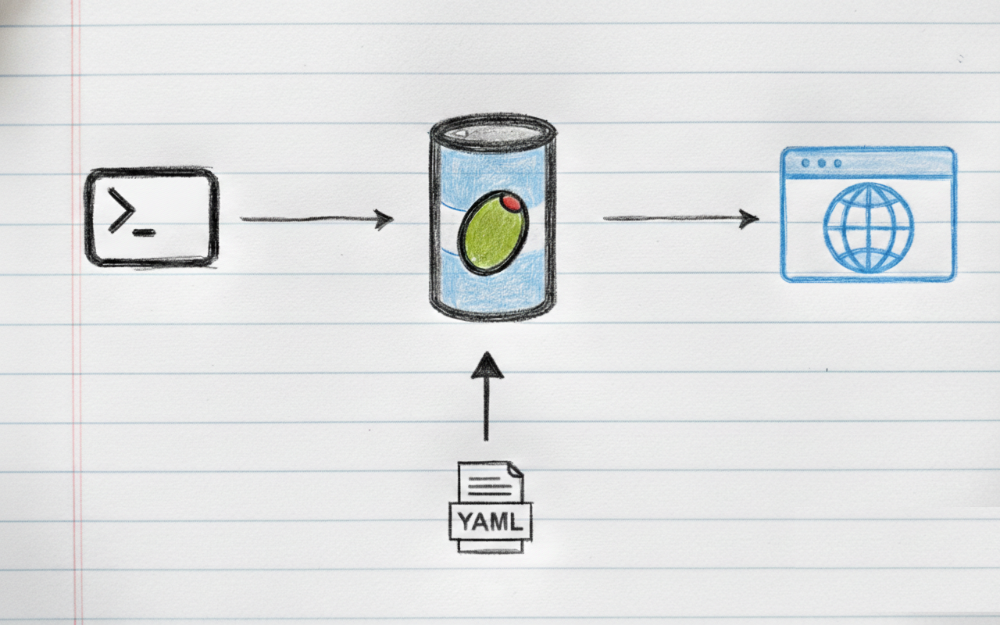
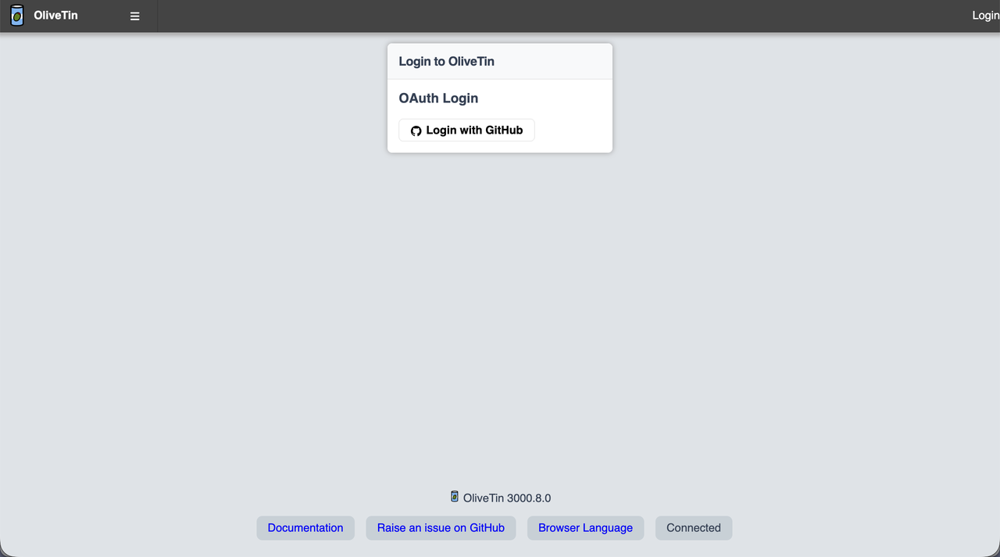

In Praise of OliveTin

In a world of complex internal tools, OliveTin bridges the gap between raw CLI and usable web UI with just yaml config.
Server Admin Panel
I used admin panels like CockPit, Ajenti, etc to provide simple web UI for non-developers to provide access to services. Developing custom widgets is time consuming and requires programming skills as well.
With OliveTin, I can provide web UI directly with just yaml config. This saves a lot of time and effort. It also provides a clean UI as it starts from scratch.
Backend Driven UI
For existing python scripts, I often use tools like Streamlit, NiceGUI, etc to create web UIs. Organizing the UI components for multiple scripts is time consuming.
OliveTin can provide web UI directly python scripts and they can be organized in groups with just yaml config.
Mobile Friendly
To do a simple deployment on mobile, I need to open an app that supports ssh, ssh into the server, navigate to a directory, run a script to deploy.
OliveTin provides a "Deploy" button on mobile browser which is way convenient.
Authentication

OliveTin provides authentication(local users, OAuth2, JWT, etc), authorization(ACLs) & accounting(logs) out of the box. With just yaml config, we can secure the web UI.
Conclusion
There are hundreds of other features provided by OliveTin like scheduling, file uploads, webhooks, etc.
If you ever want to provide a simple web UI for scripts with low code or no code, give OliveTin a try!
Need further help with this? Feel free to send a message.